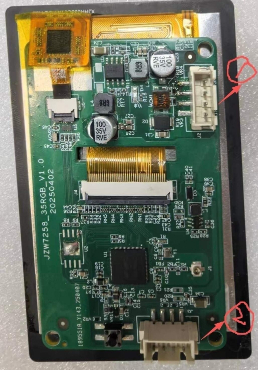
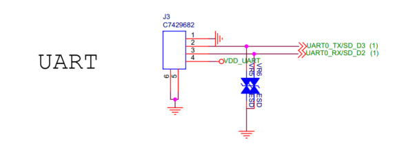

概述¶
JZW7258核心特点是BT和WIFI的相关驱动，两者应用强大而复杂。 而其它基础外设驱动接口已封装完善，用户使用方便，按需求调用接口给定参数即可。 下列对外设接口进行模块化详细说明
开发板¶

- 1号接线端子：5V供电接口 + UART1通信端口 一体式
- 2号接线端子：UART0，DEBUG烧录 + 调试打印信息 一体式
原理图¶
- MCU部分

- LCD部分

- TP部分

- UART0部分

- UART1部分

GPIO¶
BK7258有多达56个gpio，可以配置为输入或输出。所有gpio都与备用功能共享。一般情况，用户可根据以下步骤来使用GPIO：
- 对照硬件原理图，找出程序中这些引脚是否启用，确认引脚一一对应。
- 检查API返回值，确保没有ERR。
GPIO MAP¶
对照原理图，IO编号与功能对应说明
| Functions | GPIO | Functions | GPIO | |
|---|---|---|---|---|
| UART0_TX | GPIO11 | RGB_DISP(SPI_GPIO_RST) | GPIO15 | |
| UART0-RX | GPIO10 | RGB_DE | GPIO16 | |
| UART1_TX | GPIO0 | RGB_CLK | GPIO14 | |
| UART1_RX | GPIO1 | I2C1_SCL | GPIO38 | |
| SPI1_SCK(SPI_GPIO_CLK) | GPIO2 | I2C1_SDA | GPIO39 | |
| SPI1_CS(SPI_GPIO_CSX) | GPIO3 | TP_INT | GPIO28 | |
| SPI1_MOSI(SPI_GPIO_SDA) | GPIO4 | TP_RST | GPIO29 | |
| SPI1_MISO | GPIO5 | |||
| BEEP | GPIO9 | AUDIO_EN | GPIO8 | |
| LCD_PWM0 | GPIO7 | ADC_KEY | GPIO12 |
MAP Config¶
GPIO根据映射表GPIO_DEFAULT_DEV_CONFIG进行参数配置
| MAP参数序号 | MAP参数名 | 详解 |
|---|---|---|
| 00 | gpio_id | 从 0 开始编号的对应GPIO引脚号 |
| 01 | second_func_en | 是否启用第二功能 |
| 02 | second_func_dev | 第二功能见GPIO_DEV_MAP，用户不可修改该表格 |
| 03 | io_mode | 选择IO模式 |
| 04 | pull_mode | 选择上拉或下拉 |
| 05 | int_en | 是否开启中断 |
| 06 | int_type | 选择中断触发条件 |
| 07 | low_power_io_ctrl | 低功耗模式下是否保持GPIO的输出状态或设置为唤醒源 |
| 08 | driver_capacity | 共四个等级的驱动能力 |
GPIO使用介绍¶
- 用户根据开发板需求配置GPIO_DEFAULT_DEV_CONFIG表，参考GPIO_DEV_MAP表中定义的功能。如果用户需要在程序运行期间更改某个 GPIO 的功能，可以使用 gpio_dev_unmap() 函数取消原有的映射，然后使用 gpio_dev_map() 函数进行新的映射。 GPIO外设初始化时会在gpio_hal.c的 gpio_hal_default_map_init（）函数里按照 GPIO_DEFAULT_DEV_CONFIG 表初始化GPIO（需要打开宏CONFIG_GPIO_DEFAULT_SET_SUPPORT，平台只会操作一次，后面以用户配置为准,如果没有开启该宏，则平台不会操作GPIO，GPIO默认值为高组态）)
- 新建工程之后，每个CPU必须配置自己需要控制的GPIO（譬如jzw7258工程下的config_cp1中就修改了该表的默认值，对于TP引脚修改了原有的GPIO使用）。根据目前芯片的AMP架构，会导致程序中的中断由多个CPU核心处理，影响预期，比如：CPU1时钟高于CPU0，CPU1会清除CPU0中断位，导致CPU0无法检测中断导致中断丢失。所以在新建工程后每个CPU配置自己需要控制的GPIO，确保每个CPU管理自己的GPIO，注册相应的中断回调函数，确保程序按预期运行，按照以下步骤，可以解决这个问题，为每个CPU定义GPIO_DEFAULT_DEV_CONFIG表，将不同GPIO分配给不同的核心，这样每个CPU仅响应对应映射表的中断，避免多个核心处理同一个中断，确保程序按照预期正确运行： 启用宏CONFIG_USR_GPIO_CFG_EN配置； 创建 usr_gpio_cfg.h 文件：在项目的合适位置创建 usr_gpio_cfg.h 头文件，并在该文件中定义你自定义的 GPIO_DEFAULT_DEV_CONFIG
- gpio_map.h文件中的map表，覆盖了所有GPIO的配置说明，如若和默认有不同的GPIO需在此处进行修改（比如下文会提到的PWM引脚）
GPIO应用案例¶
我们以第二章成品展示的角度，讲述各个案例下对应GPIO的修改与应用：
驱动LCD，烧录程序后，屏幕背光有亮度即代表成功驱动屏幕，这里无关乎显示内容。¶
- 由屏幕驱动文件st7365.c中从配置lcd_st7365_config()中找到修改SPI接口对应GPIO：bk_idk/middleware/driver/lcd/lcd_driver.c文件，参照上文中表格，对应修改即可。
- LCD亮灭最直观的是PWM，要确保PWM通道是否和背光一致，需要在lcd_driver.c下修改宏
- LCD_BACKLIGHT_PWM PWM_ID_1
- LCD_BACKLIGHT_GPIO GPIO_7
- 还需确认PWM引脚为GPIO7与默认的GPIO8不一样，需要在gpio_map.h中修改：{GPIO_7, GPIO_DEV_PWM1}，除此之外，gpio_map.h文件配置了所有功能引脚的配置及对应关系。
提示
若更改其它硬件设备，而导致接口变化，也需要在goio_map.h中找到对应功能下，修改GPIO设备编号。
驱动TP触摸，烧录demo后，保证触摸有效并且和UI界面点位一致，没有偏移和触摸失效的情况¶
- 触摸的硬件接口是I2C，需对应确认四个引脚：bk_idk/middleware/driver/i2c/sim_i2c_driver_v2.c，修改SDA和SCL信号的引脚
- HWD_GPIO_I2C_SDA GPIO_39
- HWD_GPIO_I2C_SCL GPIO_38
- TP_INT和TP_RST分别是TP的中断和复位引脚，bk_idk/middleware/driver/tp/tp_driver.c，修改
- TP_INT_GPIO_ID (GPIO_28)
- TP_RST_GPIO_ID (GPIO_29)
UART¶
UART有三个，分为DEBUG和通信，两者波特率皆115200。UART0作为DEBUG接口，有烧录工程和调试程序的作用。在程序对应位置加入打印信息，烧录后即可看到相关内容。根据原理图可知，UART0引脚对应：RX-GPIO10,TX-GPIO11,在驱动层已配置好用户无需修改；UART1引脚对应：RX-GPIO1,TX-GPIO0,同理已配置好。需要实现的现象是：电脑发给开发板什么数据，开发板将接收到的数据原样返回给电脑。采用sscom串口调试工具(若只查看串口数据可以用哦xshell)。无论采用什么方式实现，都需要配置好串口需要的参数，如下:
static const uart_config_t s_config = {
.baud_rate = CONFIG_UART_EXAMPLE_BAUD_RATE, 波特率配置115200
.data_bits = CONFIG_UART_EXAMPLE_DATA_BITS, 8位数据位
.parity = CONFIG_UART_EXAMPLE_PARITY, 无奇偶校验
.stop_bits = CONFIG_UART_EXAMPLE_STOP_BITS, 1位停止位
.flow_ctrl = CONFIG_UART_EXAMPLE_FLOW_CTRL, 无硬件控制流
.src_clk = CONFIG_UART_EXAMPLE_SRC_CLK, 时钟26Mhz
}
UART0¶
上文有提及到UART0作为烧录程序和调试程序运行信息的串口，同数据串口参数一致，配置115200波特率。对于烧录过程，主要工作的是FLASH，相关软件驱动无需再配置，用户只需关注硬件连接方式即可。而对于打印信息，我们为此封装了不同优先级，打印信、打印错误等。
- bk_idk/tools/build_tools/cmake/build.cmake中可修改默认打印优先级："-DCFG_LOG_LEVEL=3"
- 打印类型及优先级：
| BK_LOG | LEVEL | MEAN |
|---|---|---|
| BK_LOG_NONE | 0 | 无日志输出 |
| BK_LOG_ERROR | 1 | 严重错误信息 |
| BK_LOG_WARN | 2 | 警告信息，已采取恢复措施的错误条件 |
| BK_LOG_INFO | 3 | 日志信息，正常事件流程的信息消息 |
| BK_LOG_DEBUG | 4 | 日志调试信息，非正常使用所需的额外信息如指针等 |
| BK_LOG_VERBOSE | 5 | 日志详细信息，非正常使用所需的额外信息 |
当build.cmake中设置的优先级为3时，烧录程序后的串口信息中只能收到BK_LOG_INFO、BK_LOG_DEBUG、BK_LOG_VERBOSE的日志信息。
- 同一个列表设置中，还可设置调试模式或正式版本：-DCONFIG_DEBUG_FIRMWARE=1；-DCONFIG_RELEASE_VERSION=1 。当调试模式下，用户可以通过CLI命令分组测试外设模块，已封装好相应功能的指令，需要的时候在编译工程中打开对应配置即可。
- 烧录jzw7258的例程时，上电的日志信息，来源于cpu硬件初始化和media层的初始化的信息。例如，CPU0和CPU1的地址空间情况，UI的启动过程信息，蓝牙和WIFI的相关信息等。
UART1¶
UART1作为数据通信串口，承载屏幕点击下的数据和控制器相应的数据，使二者相互联系，当数据相互传输时，屏幕点击是否能及时相应到控制器，重点在于串口传输的稳定性，包括数据正确解析、传输无干扰。
发包通路¶
用户调用bk_uart_write_bytes() 进行数据发送。
收包通路¶
- 硬件收包： UART将接收包存放在硬件FIFO中，当包中数据超过上限时即溢出，产生RX中断。
- 中断收包： UART在规定时间内没有收到包时，产生RX接收完成中断，软件进入中断接收处理中，硬件读取数据放入RX FIFO
- 应用收报： 调用bk_uart_read_bytes() 接口接收数据，此时从RX FIFO中读取数据，到达一定时间立即返回接收到的数据，如若时间为0则代表立即返回数据。
应用场景¶
当前UART支持以下应用场景：
- 默认UART中断流程：默认使用bk_uart_write_bytes()和bk_uart_read_bytes()处理收发包，满足大部分应用需求。
- 基于第一种方式，注册用户回调callback，产生中断后，执行用户的中断回调函数
- 第三方代码实现： bk_interrupt_register(xx, isr, arg) 替换默认的 UART 中断处理程序。 此时收发包过程完全由应用实现。
1. 以第一种为例（非阻塞式），代码流程如下¶
- 主函数入口处进行串口驱动初始化 bk_uart_driver_init()，底层规定，在调用任何其它UART接口函数之前，应先调用此API，以初始化所有UART ID通用资源。
- 串口初始化：调用bk_uart_init(UART_ID_1, &s_config)，参数一规定ID，参数二为UART参数配置。
- 使能软件FIFO: 调用bk_uart_enable_sw_fifo()函数。
- 使能接收中断bk_uart_enable_rx_interrupt()。
2. 第二种为例（中断接收），代码流程如下¶
制作demo,通过UI联合接收发送串口数据，实现功能：PC发送数据，UI窗口立即显示PC发送的内容；UI通过键盘，输入数据到窗口，点击send按钮发送给PC，通过串口工具打印从UI发来的数据。
- 设计UI界面显示（界面显示见“成品设计章节”）：定义UI接收/发送缓冲区 lv_buffer_t结构体,初始化样式标、文本、图标，并创建接收框、发送框的父类，再创建各自子类：按钮、标签，为发送框父类创建keyboard，并隐藏。
添加按钮回调事件：当检测到点击时，获取键盘文本，通过UART发送出去。
添加发送回调事件：当获取到输入事件发生时，设置文本框和键盘关联，更新layout，并获取键盘文本。
显示数据信息：在屏幕上创建标签，设置标签的文本内容为串口数据内容，刷新标签以显示更新后的内容。
回看第二种实现方式，基于第一种加入用户回调函数，故在此之上还需要开启回调函数。调用bk_uart_register_rx_isr()函数，注册接收中断，其中第二个函数为中断回调函数uart_example_rx_isr，用户需自定义此函数加入中断业务需求。
int len = bk_uart_read_bytes(UART_ID_1, data, UART_EXAMPLE_BUF_LEN, 0);
if(len >= UART_EXAMPLE_BUF_LEN)
{
len = UART_EXAMPLE_BUF_LEN;
}
BK_LOGI(TAG, "uart recv data :\r\n");
for(int i = 0; i < len; i++)
{
BK_LOGI(TAG, "data[%d]=0x%x\r\n", i, data[i]);
}
uart_send_data(data, len);
应用工程中引用串口时，需要打开宏CONFIG_UART1，具体配置详见IDK下的UART项目。
PWM¶
JZW7258开发板有PWM0和PWM1两组PWM开发器，PWM控制器下有3个TIM定时器，每个定时器有2个channel。因此，每个 PWM 控制器有6个 channel，共支持12个 channel，对应软件中的 PWM_ID_0 到 PWM_ID_11。PWM时钟源有26M和32M两种，常规选择26M时钟，则 PSC应配置为25。 PWM本身的功能就是更改占空比值，可以实现调节背光或蜂鸣器此类带有PWM功能的设备，除正式设置占空比参数的流程外，还需要进行外设初始化相关操作，这是所有外设不可避免的主要环节。在进行正式操作之前，先要确认GPIO接口是否与硬件开发板对应正确，与上文GPIO章节对应所说，修改GPIO需在gpio_map.h文件中确认。将默认PWM0的gpio为p8,更改为JZW7258开发板的PWM0对应p7。
1. 初始化部分¶
- 入口主函数PWM驱动初始化，调用bk_pwm_driver_init()。同UART，驱动初始化必须在调用其它PWM接口之前调用此API。
- 在开始PWM流程前，先要进行ID初始化，这点和UART同理，调用bk_pwm_init()，配置参数调用 pwm_init_config_t init_config 结构体，重新初始化参数，这里配置PWM为100占空比，即上电后为满率，需要更改PWM的逻辑时再调用更改占空比的用户接口(具体见下文步骤)。
- 与常规不同的是，初始化后的启动，需要启用中断才能生效，但这里不需要用户回调处理，同UART非阻塞处理的流程。由于初始化里启用了中断，需要关闭中断，故调用bk_pwm_capture_stop()/bk_pwm_capture_start()函数。
2. 设置PWM占空比参数¶
- 已封装好函数接口，入口参数为用户需要设置的占空比值，调用user_pwm_set_backlight(uint32_t duty)函数即可
3. 应用场景¶
我们通过屏幕显示的滑动条作为输入，控制PWM变化，滑动条的值为0-100，对应PWM值0-100，可观察到背光亮灭的变化。
LVGL设计滑动条并显示进度条数值¶
- 创建滑动条和标签，定义其大小位置及样式：
lv_obj_t *slider = lv_slider_create(lv_scr_act());
lv_obj_set_width(slider,200);
lv_obj_center(slider);
lv_obj_add_event_cb(slider,slider_event_cb,LV_EVENT_VALUE_CHANGED,NULL);
//创建标签在屏幕上，并设置文本
slabel = lv_label_create(lv_scr_act());
lv_label_set_text(slabel, "100");
lv_obj_align_to(slabel, slider, LV_ALIGN_OUT_TOP_MID, 0, -15);
- 滑动条事件回调函数，用来获取标签值，并同时调用设置PWM值的API，传入参数为获取到的滑动条标签值。用户使用时，在逻辑需要的地方调用此接口即可设置PWM。
- 详见工程路径：projects/jzw7258/main/lv_demo_pwm.c 。
WIFI¶
WiFi也可看做一个外设，与UART和PWM有异曲同工之妙。
- 支持三个虚拟接口：STA、AP、Monitor
- 支持仅 station 模式、仅 AP 模式、station + AP 共存模式
- 支持 IEEE802.11 b/g/n/ax 2.4GHz 协议标准
- 支持 AMSDU、AMPDU、QoS、HT40 以及其他主要功能
- 支持802.11N MCS0-7
- 支持 WPA、WPA2 及 WPA3 等加密方式
- station 模式下支持低功耗休眠
- 空中数据传输最高可达 20Mbits/s TCP 吞吐和 35Mbits/s UDP 吞吐
station模式¶
包含了初始化、配置、连接&断开连接等各阶段的具体描述
1. WiFi初始化¶
- 主任务入口调用 bk_event_init() 函数，以创建任务并初始化时间队列，此函数必须放在其它WIFI/BT接口函数之前。
- 再调用 bk_netif_init() 函数，创建并初始化 Lwip 核心任务。
- 调用 bk_wifi_init() 函数，创建 Wi-Fi 驱动程序任务，并初始化 Wi-Fi 驱动程序，其中包括：底层 MAC 软件、射频参数、wpa_supplicant 。
- 主任务通过调用系统 API 创建应用程序任务。
2. WIFI配置¶
- 调用 bk_wifi_sta_set_config() 函数配置参数，常规情况，用户传入AP名称和密码，必须再bk_wifi_sta_start() 开启之前调用。
3. 启动阶段¶
- 调用 bk_wifi_sta_start() 函数启动WIFI,启用成功返回OK，可先调用bk_wifi_sta_stop()停止，再开启。
4. 连接阶段¶
- 调用bk_wifi_sta_connect() 函数连接WIFI，将启动内部扫描和连接流程
- 成功发现AP后会上报成功标志
- 连接成功后启动 DHCP 客户端服务，触发 DHCP 流程。
5. 获取IP地址¶
- 启动 Lwip 的 DHCP 客户端获取 IP 地址
- 触发IPV4，可以进行数据收发，如TCP/UDP。
AP模式¶
各阶段与station模式流程类似，共6个步骤：初始化阶段、配置阶段、启动阶段、连接阶段、断开阶段、清理阶段
WI-FI扫描¶
仅 station 或者 station/AP 共存模式支持 Wi-Fi Scan，包含五个 API
1. 开启扫描¶
调用函数bk_wifi_scan_start()开始扫描，扫描完成后，上报 EVENT_WIFI_SCAN_DONE 事件，具体步骤可以参考如下：
- 准备扫描完成回调函数，回调函数可以参考 bk_wifi_scan_get_result() 和 bk_wifi_scan_free_result()
- 调用事件注册函数注册扫描完成事件回调，参考 bk_event_register_cb()
- 调用上述开始扫描函数，开启扫描
2. 停止扫描¶
调用函数 bk_wifi_scan_stop() 停止 Wi-Fi 驱动程序扫描，作用与 bk_wifi_sta_disconnect() 类似，但是该函数可能同步释放一些资源
3. 获取扫描结果¶
调用函数 bk_wifi_scan_get_result() 获取扫描热点结果，一般返回值有以下几种：
-
BK_OK：扫描成功
-
BK_ERR_NULL_PARAM：扫描失败，扫描结果为空
-
BK_ERR_NO_MEM：扫描失败，没有内存
-
others：其他错误
-
函数 bk_wifi_scan_dump_result() 用于打印输出扫描到的热点信息
4.释放扫描结果¶
调用 bk_wifi_scan_free_result() 释放申请扫描结果内存
5. 扫描类型¶
| 扫描类型 | 描述 |
|---|---|
| 主动扫描 | 通过发送probe request进行扫描，默认为主动扫描 |
| 被动扫描 | 通过被动等待接收beacon而不发送probe request进行扫描 |
| 全信道扫描 | 扫描所有信道 |
Station连接场景¶
在扫描阶段只找到一个目标AP的情况，用户无需关注此过程，仅作参考
1. 扫描阶段¶
- Wi-Fi 驱动程序开始在 “Wi-Fi 连接”模式下扫描
- 如果未找到目标 AP，将产生 EVENT_WIFI_STA_DISCONNECTED 事件，且原因码为 WIFI_REASON_NO_AP_FOUND
2. 认证阶段¶
- 发送认证请求数据包并开启认证计时器
- 如果在认证计时器超时之前未接收到认证响应数据包，将产生 EVENT_WIFI_STA_DISCONNECTED 事件，原因码为 WIFI_REASON_AUTH_FAIL
- 接收到认证响应数据包，认证计时器取消
- AP 在响应中拒绝认证并发送 EVENT_WIFI_STA_DISCONNECTED 事件，原因码为 WIFI_REASON_AUTH_FAIL 或者 AP 指定的其他原因
3. 关联阶段¶
- 发送关联请求并开启关联计时器
- 如果在关联计时器超时之前未收到关联响应，将产生 EVENT_WIFI_STA_DISCONNECTED 事件，原因码为 WIFI_REASON_ASSOC_FAIL
- 接收关联响应，并停止关联计时器
- AP 在响应中拒绝关联并发送 EVENT_WIFI_STA_DISCONNECTED 事件，原因代码将在关联响应中指定
4. 四次握手阶段¶
- 开启握手定时器，定时器超时前未收到 AP 发送的 1/4 EAPOL 帧，将产生 EVENT_WIFI_STA_DISCONNECTED 事件，原因码为 WIFI_REASON_HANDSHAKE_TIMEOUT
- 接收到 AP 发送的 1/4 EAPOL 帧
- station 回复 2/4 EAPOL 帧
- 如果在握手定时器超时前未收到 AP 发送的 3/4 EAPOL 帧，将产生 EVENT_WIFI_STA_DISCONNECTED 事件，原因码为 WIFI_REASON_HANDSHAKE_TIMEOUT
- 接收到 3/4 EAPOL 帧
- station 回复 4/4 EAPOL帧
- station 发送 EVENT_WIFI_STA_CONNECTED 事件
原因代码¶
SDK 中定义的 Wi-Fi 原因代码，第一列为 wifi_types.h 中定义的名称（默认缺省 WIFI_REASON），第二列为对应数值，该数值可以参考 IEEE 802.11-2020 中的标准数值，第三列为原因描述
| 原因代码 | 数值 | 描述 |
|---|---|---|
| UNSPECIFIED | 1 | 未特定原因 |
| PREV_AUTH_NOT_VALID | 2 | 先前的身份验证不再有效 |
| DEAUTH_LEAVING | 3发送 STA 离开（或者已经离开）ESS 而被取消身份认证 | |
| DISASSOC_DUE_TO_INACTIVITY | 4 | 由于不活动而解除关联 |
| DISASSOC_AP_BUSY | 5 | 因为 AP 无法处理所有当前关联的 STA |
| CLASS2_FRAME_FROM_NONAUTH_STA | 6 | 从未经验证的 STA 接收到的2类帧 |
| CLASS3_FRAME_FROM_NONASSOC_STA | 7 | 从非关联 STA 接收的3类帧 |
| DISASSOC_STA_HAS_LEFT | 8 | 由于发送 STA 离开（或者已经离开）BSS 而解除关联 |
| STA_REQ_ASSOC_WITHOUT_AUTH | 9 | 请求（重新）关联的 STA 未通过响应 STA 的身份验证 |
| PWR_CAPABILITY_NOT_VALID | 10 | 由于电源能力元素中的信息不可接受而解除关联 |
| SUPPORTED_CHANNEL_NOT_VALID | 11 | “支持的信道”元素中的信息不可接受而解除关联 |
| BSS_TRANSITION_DISASSOC | 12 | 由于 BSS 过渡管理而解除关联 |
| INVALID_IE | 13 | 无效信息元素 |
| MICHAEL_MIC_FAILURE | 14 | 信息完整性代码（MIC）故障 |
| 4WAY_HANDSHAKE_TIMEOUT | 15 | 四次握手超时 |
| GROUP_KEY_UPDATE_TIMEOUT | 16 | 组密钥更新超时 |
| IE_IN_4WAY_DIFFERS | 17 | 与（重新）关联请求/探测响应/信标帧不同的4次握手 中的信息元素 |
| GROUP_CIPHER_NOT_VALID | 18 | 无效的组密码 |
| PAIRWISE_CIPHER_NOT_VALID | 19 | 无效的成对密码 |
| AKMP_NOT_VALID | 20 | 无效 AKMP |
| NSUPPORTED_RSN_IE_VERSION | 21 | 不支持的 RSN 信息元素功能 |
| INVALID_RSN_IE_CAPAB | 22 | 无效的 RSN 信息元素功能 |
| IEEE_802_1X_AUTH_FAILED | 23 | IEEE 802.1x 身份验证失败 |
| CIPHER_SUITE_REJECTED | 24 | 由于安全策略，密码套件被拒绝 |
| TDLS_TEARDOWN_UNREACHABLE | 25 | TDLS 直连无法到达对端，TDLS 直连断开 |
| TDLS_TEARDOWN_UNSPECIFIED | 26 | 未知原因的 TDLS 直连断开 |
| SSP_REQUESTED_DISASSOC | 27 | 由于会话被 SSP 请求中断而取消关联 |
| NO_SSP_ROAMING_AGREEMENT | 28 | 由于缺少 SSP 漫游协议而取消关联 |
| BAD_CIPHER_OR_AKM | 29 | 因为 SSP 密码套件或者 AKM 的需求，请求服务被拒 |
| NOT_AUTHORIZED_THIS_LOCATION | 30 | 请求的服务在此位置未得到授权 |
| SERVICE_CHANGE_PRECLUDES_TS | 31 | TS 被删除，原因是 BSS 服务特性或者运行模式改变 导致 Qos AP 缺少足够的带宽供 Qos STA |
| UNSPECIFIED_QOS_REASON | 32 | 未指定的 Qos 原因 |
| NOT_ENOUGH_BANDWIDTH | 33 | 因为 Qos AP 没有足够的带宽给 Qos STA 而取消关联 |
| DISASSOC_LOW_ACK | 34 | 由于大量的帧需要被确认但是没有确认，因为 AP 未 回复或者糟糕的信道条件导致关联取消 |
| EXCEEDED_TXOP | 35 | 因为 STA 传输超过了 TXOPs 的限制而取消关联 |
| STA_LEAVING | 36 | 请求 STA 正在离开 BSS 或者重启 |
| END_TS_BA_DLS | 37 | 请求 STA 不再使用该流或者会话 |
| UNKNOWN_TS_BA | 38 | 请求 STA 使用一种尚未完成的机制接收帧 |
| TIMEOUT | 39 | 对端 STA 请求超时 |
| Reserved | 40-45 | 保留 |
| AUTHORIZED_ACCESS_LIMIT_REACHED | 46 | 在 Disassociation 帧中：已达到授权访问限制 |
| EXTERNAL_SERVICE_REQUIREMENTS | 47 | 在 Disassociation 帧中：外部服务需求 |
| INVALID_PMKID | 49 | 无效的成对主密钥标识符（PMKID） |
| BEACON_LOST | 256 | 连续丢失 N 个 信标 |
| NO_AP_FOUND | 257 | 未扫描到目标 AP |
| WRONG_PASSWORD | 258 | 密码错误 一般密码输错，或者四次握手过程中丢包 |
| DISCONNECT_BY_APP | 259 | 应用层主动断开 |
| DHCP_TIMEOUT | 260 | DHCP 超时（20s） |
蓝牙¶
BLE 低功耗蓝牙¶
BT 经典蓝牙¶
DUT¶
---------------------------------------------------end----------------------------------------------------------